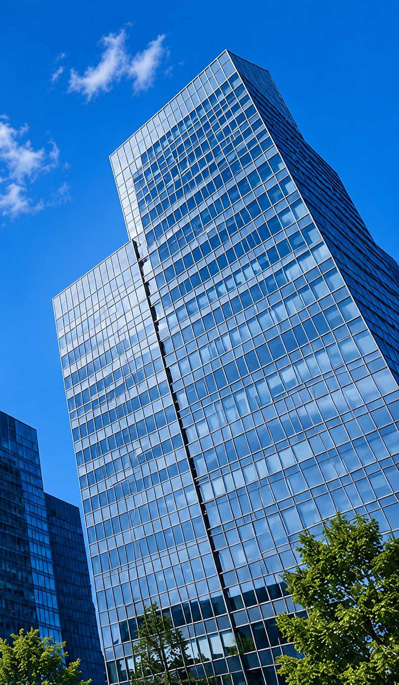
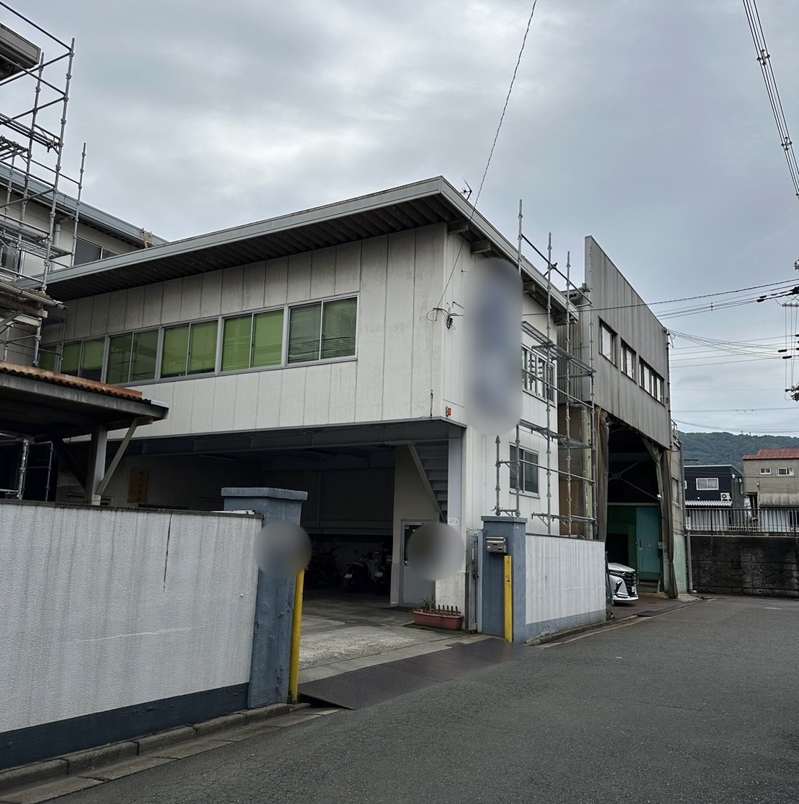
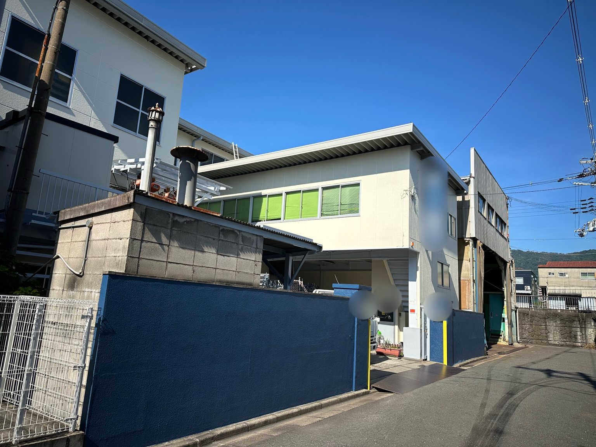
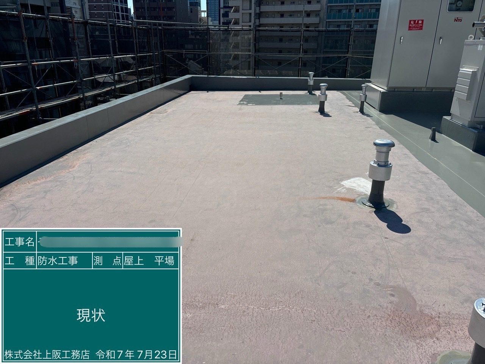
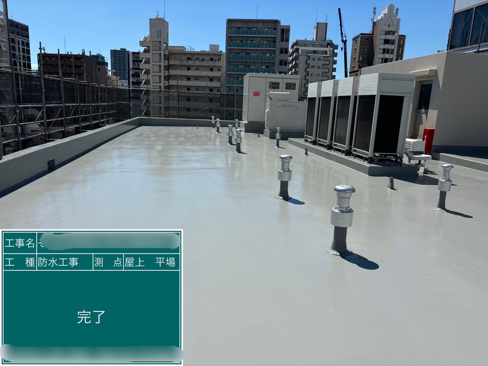
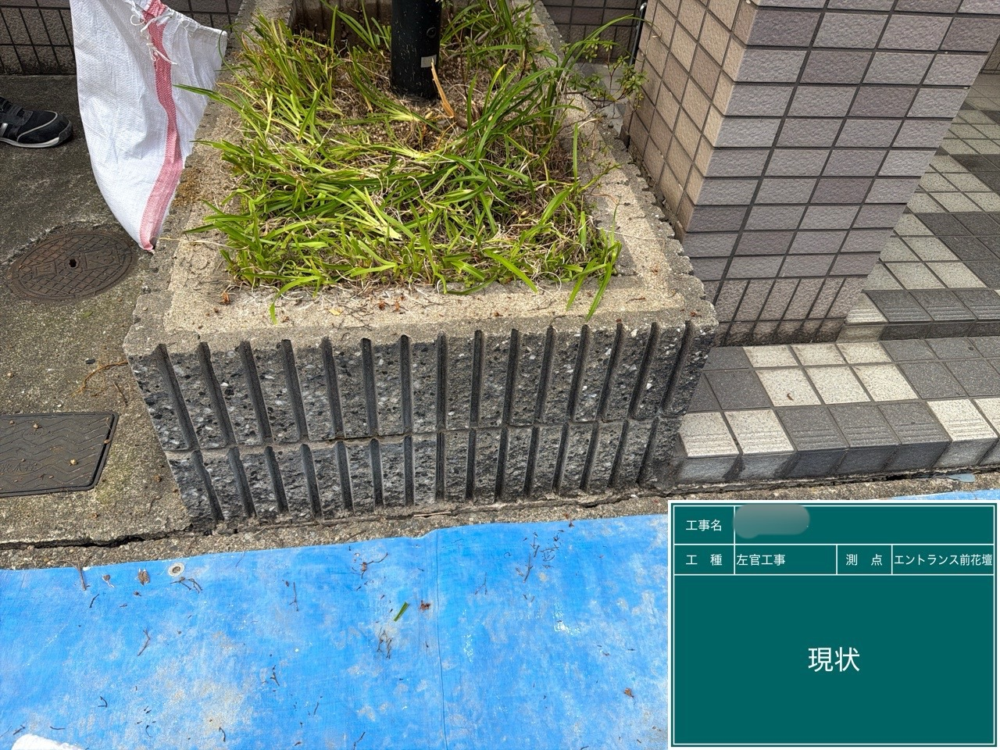
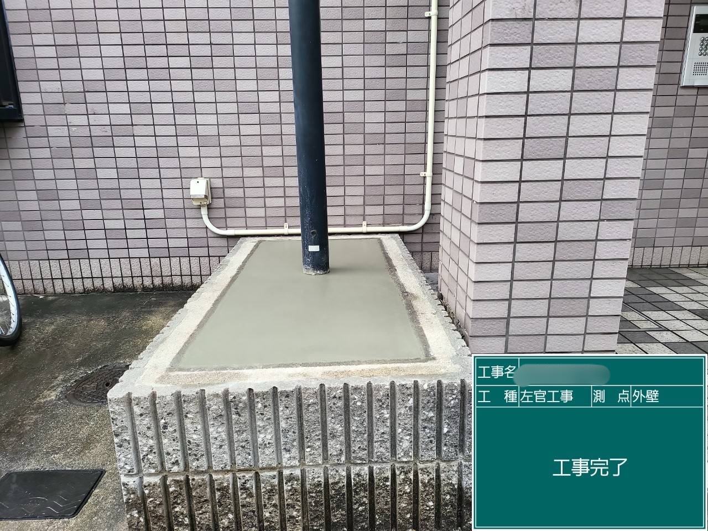
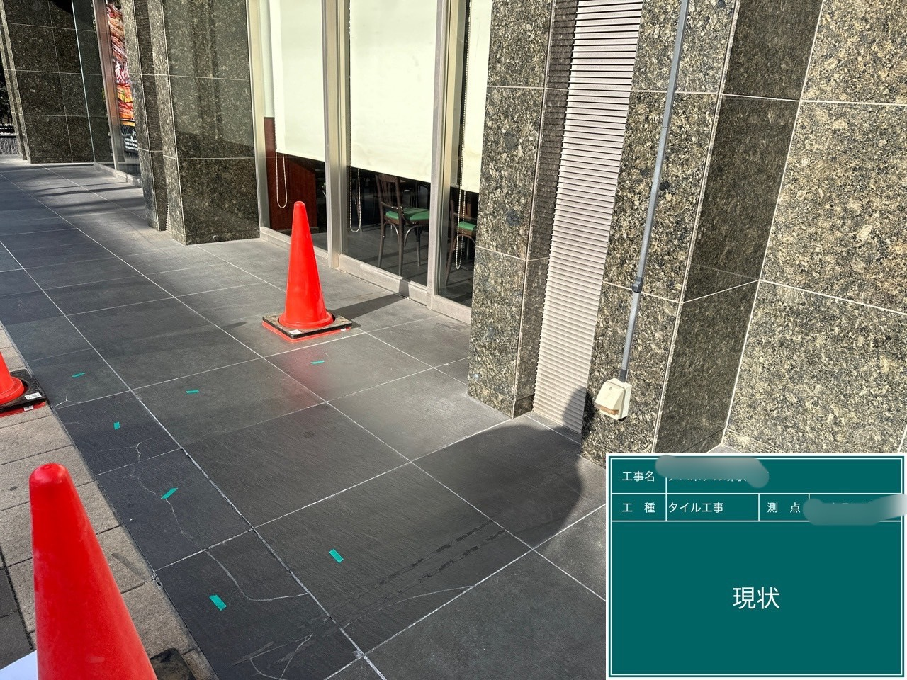
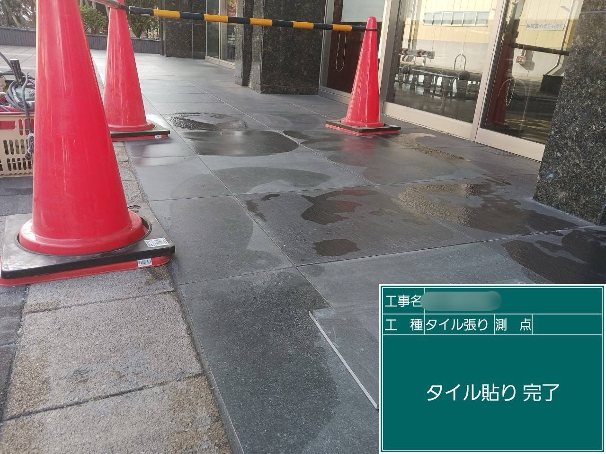

元写真をAI補完・高画質化建物の価値を守り、未来へつなぐ。
確かな技術と誠実な施工で、
安心・安全な建物を支え続けます。
ごあいさつMESSAGE
株式会社 友建は、大阪府を拠点に防水工事・左官工事・タイル工事・外壁工事全般を手掛けています。
確かな技術と誠実な施工で、お客様の大切な建物の価値を守り続けてまいります。
安全・品質・信頼を第一に、丁寧な仕事を積み重ねてまいります。
代表取締役 山岡 友尚
施工実績WORKS
これまでに手がけた施工の一部をご紹介します。写真をクリックすると拡大できます。


Before


After
外壁修繕工事


Before


After
防水工事


Before


After
左官工事


Before


After
タイル工事
会社概要COMPANY
| 会社名 | 株式会社 友建 | ||
| 所在地 | 〒578-0911 大阪府東大阪市中新開2丁目13番16号 コムプラザ久宝A号 | ||
| 代表者 | 代表取締役 山岡 友尚 | 電話番号 | 072-920-4903 |
| 創業 | 平成27年1月 | 営業時間 | 9:00〜17:00 |
| 法人設立 | 令和3年1月12日 | 定休日 | 日曜日・祝日 |
| 資本金 | 500万円 | 事業内容 | 防水工事・左官工事・タイル工事・外壁工事全般 |
| 建設業許可 | 大阪府知事許可（般-8）第155757号 | 対応エリア | 大阪府を中心に近畿一円 |
| 健康宣言 | 健康宣言の証を見る（拡大表示） | ||

お問い合わせCONTACT
お電話でのお問い合わせ
072-920-4903
受付時間 9:00〜17:00
（定休日：日曜日・祝日）
（定休日：日曜日・祝日）